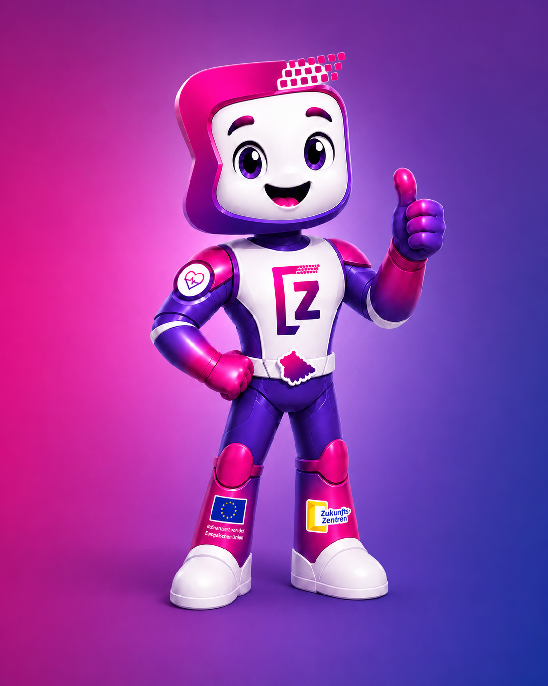

1
Zehn Fragen beantworten
Bewerte die tatsächlichen Bedingungen an deinem Bildschirmarbeitsplatz.
ZeTT Gesunde Arbeit
Beantworte zehn Fragen und erhalte konkrete Tipps sowie Hilfsmittel aus der ERGOthek zum Ausprobieren.

Ablauf
Die Antworten werden direkt im Browser verarbeitet und nicht gespeichert.
Bewerte die tatsächlichen Bedingungen an deinem Bildschirmarbeitsplatz.
Du siehst, was bereits passt, wo Verbesserungen möglich sind und welche Punkte noch geprüft werden sollten.
Du erhältst priorisierte Maßnahmen und passende Hilfsmittel für deine konkreten Problembereiche.
Prüfbereiche
Ergonomisches Arbeiten entsteht durch das Zusammenspiel von Einrichtung, Technik, Arbeitsumgebung und Arbeitsweise.
Sitzposition, bewegliche Rückenlehne und eine bequeme Armauflage mit lockeren Schultern.
Entspannte Kopfhaltung am Hauptbildschirm sowie Licht, Blendung und Spiegelungen.
Körpernahes Tippen und Bedienen der Maus sowie die getrennte Positionierung von Laptopbildschirm und Tastatur.
Konzentriertes Arbeiten ohne häufigen Lärm, Wechsel zwischen Sitzen, Stehen und Gehen sowie bildschirmfreie Pausen.
Beantworte zehn Fragen und erhalte konkrete Tipps sowie Hilfsmittel aus der ERGOthek zum Ausprobieren.